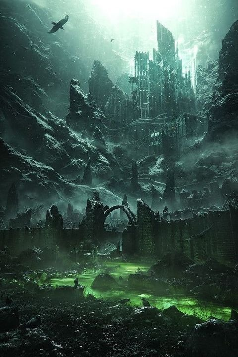

El mundo
Astaroth es el nombre con el que fue nombrada esta torre. Es el lugar donde el señor oscuro habita cuando aparece. Según el conocimiento general, esta torre está formada por 100 pisos, hay pisos que siempre son seguros, sin importar la aparición o no del señor oscuro.
Cuando el señor oscuro está descansando, los humanos aprovechan para poder habitar las zonas seguras de los pisos. La única desgracia es que deben quedarse en esas zonas cuando el señor oscuro aparece pues, las demás se vuelven peligrosas con la aparición de unos seres oscuros que se manifiestan con la presencia del señor. Estos seres oscuros siguen la voluntad del señor y guardan estos pisos no seguros para que nadie pueda ir hacia la cima, que es donde está el mismo señor que los controla y crea.
Dentro de la torre se pueden conseguir materiales que aventureros pasados utilizaron en su antigua aventura contra el antiguo señor oscuro aunque, nadie sabe realmente dónde están guardadas pues han pasado milenios desde aquello.
